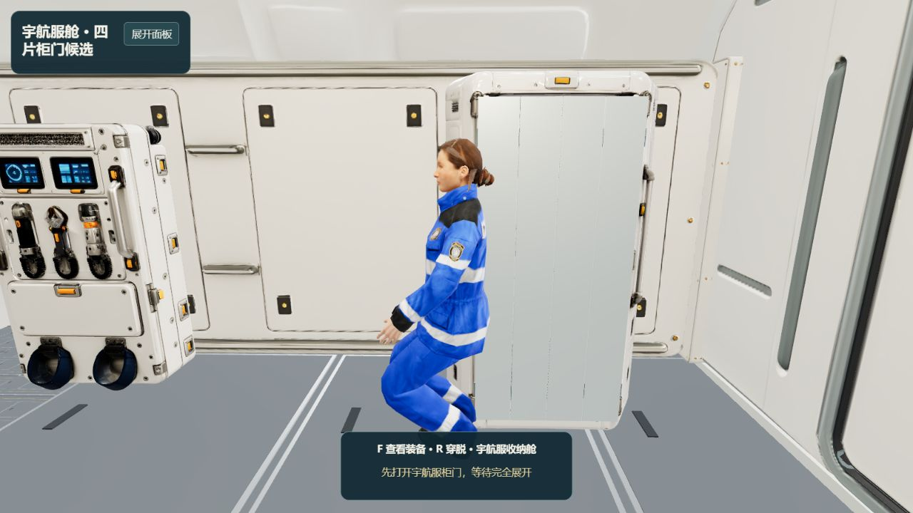
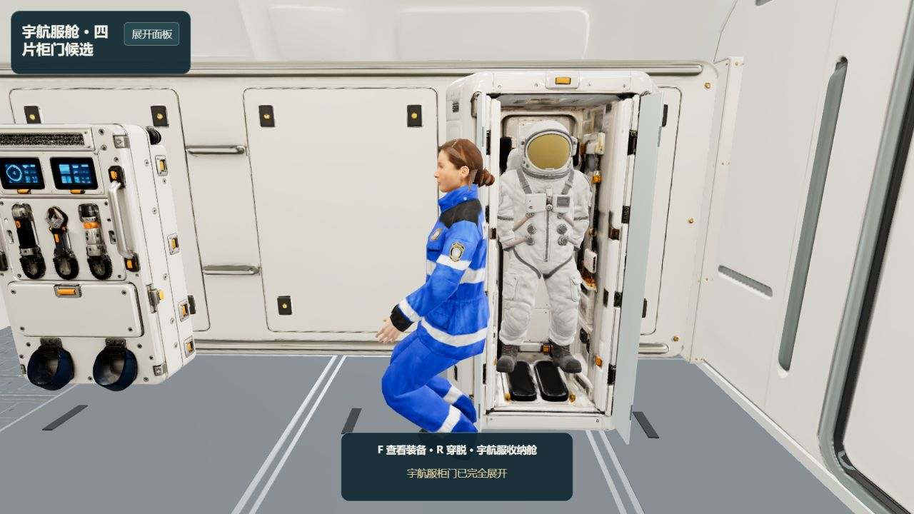
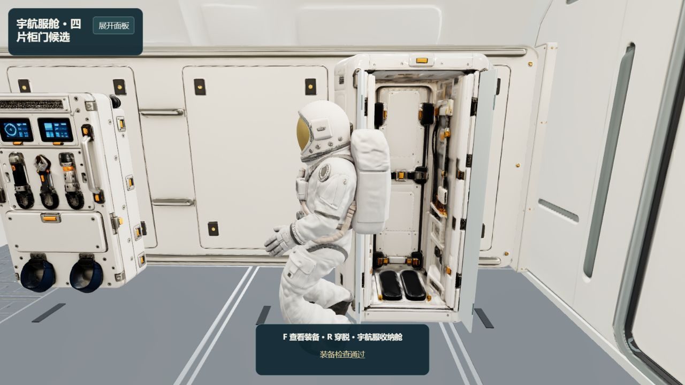
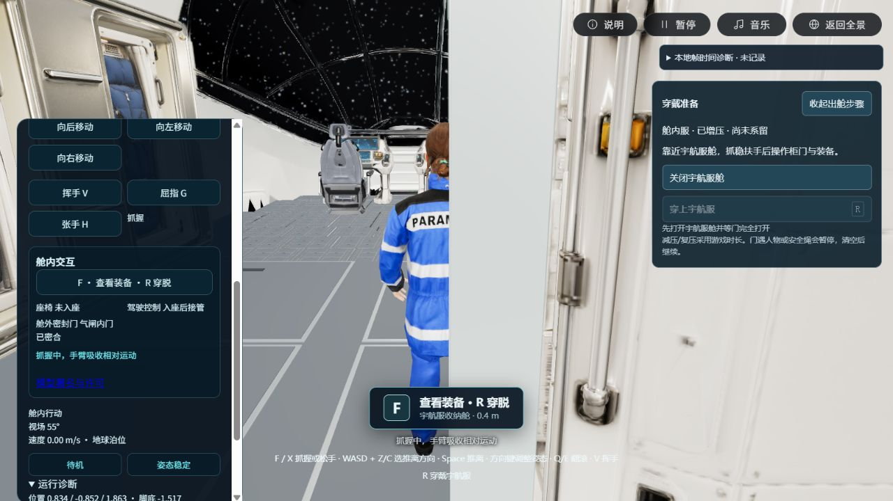

P3-R01 · 2026-10-28 · 另存候选，原模型保留
柜门能展开，宇航服能取用
本轮为既有服舱增加四片双折门，与实际人物接触、穿脱和主游戏中的附近操作提示联动。以下是模型运行时截图。
局部功能可检查，完整出返舱未通过。
门框抓握后的穿行动作仍受真实手臂/厚门框碰撞阻挡，两轮失败已保留。没有缩小人物、隐藏船壳或关闭碰撞来判定成功。

关闭状态：四片门板覆盖原柜口；柜门未完全展开时，穿戴操作被阻止。

展开状态：两侧各两片门折叠收拢，露出原有宇航服。门遇人物或结构暂停，让开后继续。

穿戴完成：沿用既有宇航服与骨架，柜内展示服随穿戴隐藏。此图来自明确标注的柜旁检查起点，不代表已从主场景连续走完EVA。
实际检查了什么
- 原生人物抓稳柜旁来源表面；开柜、穿戴、脱回柜内；取消与失去支撑中止穿脱；暂停/保存/重建。
- 四片门板、2.02米高度、1.4厘米厚度与不超过28厘米的通道活动；面朝向、非退化和实际门面扫掠受阻/恢复。
- 主游戏从初始扶手推离到服舱旁，新上下文面板出现并能驱动柜门。此次接近过近会被柜门避让阻止，穿戴保持禁用。
- 独立气闸/舱外起点：舱内系留不消耗推进燃料；舱外方向推进、惯性、燃料、8米绳长约束及恢复。独立起点不等于完整连续出返舱。
主场景受阻例与工程记录

主场景真实接近后的受阻例，未借助柜边坐标设置。柜门未完全展开，穿戴按钮禁用。327项测试通过；类型检查与生产构建通过，保留既有大chunk提示。首次总加载约435MB与当前短时帧率仍需专项优化，未通过20分钟性能门禁。
本轮完整记录 · 来源核对 · 柜门候选参数 · 失败穿行诊断 · 后部船壳碰撞诊断
默认版本保留。候选通过 lockerDoors=v1 选择。装备检查、减压时长、减速/卷收为游戏机制；服装切换不是布料模拟。用户视觉、完整EVA、冷加载与目标设备长期性能、远端手机可见性尚未验收。